Code
library(readxl)
library(dplyr)
library(ggplot2)
library(maps)
library(scales)
options(warn = -1)
#reading the data
lca <- read_excel("data/2024/FY2024_Q4.xlsx")As specified during the data-set analysis, our overall extended analysis is limited towards the filings in FY-2024- Q4 (July 1 - September 31).
library(readxl)
library(dplyr)
library(ggplot2)
library(maps)
library(scales)
options(warn = -1)
#reading the data
lca <- read_excel("data/2024/FY2024_Q4.xlsx")#CASE STATUS Freq
case_freq <- lca |>
filter(!is.na(CASE_STATUS), CASE_STATUS != "") |>
count(CASE_STATUS, sort = TRUE)
ggplot(case_freq, aes(x = reorder(CASE_STATUS, n), y = n)) +
geom_col() +
coord_flip() +
scale_y_continuous(labels = label_comma(scale = 1/1000, suffix = "K"))+
labs(
title = "Frequency of CASE_STATUS in LCA Data",
x = "Case Status",
y = "No. of Applications (in Thousands)"
) +
theme_minimal()+
theme(legend.position = "none")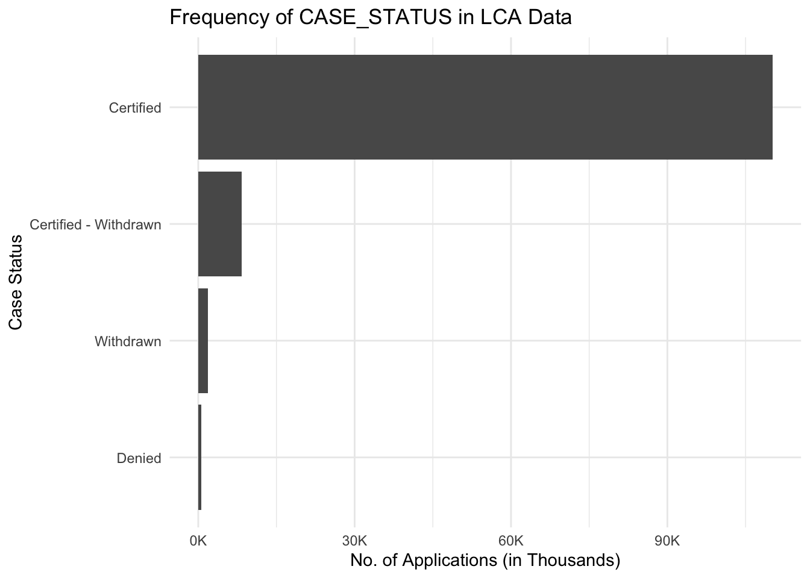
A vast majority of all LCA notifications are Certified, while a small percentage are either Certified-Withdrawn, Withdrawn, and even fewer are Denied. On the whole, it seems that the data indicates a predominant approval of LCAs, with direct rejections being a rather exceptional event.
# Replace PREVAILING_WAGE with your actual wage column name if different
lca_wage <- lca |>
filter(!is.na(PREVAILING_WAGE),
PREVAILING_WAGE > 0,
!is.na(CASE_STATUS),
CASE_STATUS != "")
ggplot(lca_wage, aes(x = CASE_STATUS, y = PREVAILING_WAGE)) +
geom_boxplot() +
coord_flip() +
scale_y_continuous(labels = label_comma(scale = 1/1000, suffix = "K"))+
labs(
title = "Prevailing Wage by Case Status",
x = "Case Status",
y = "Prevailing Wage (in Thousands)"
) +
theme_minimal()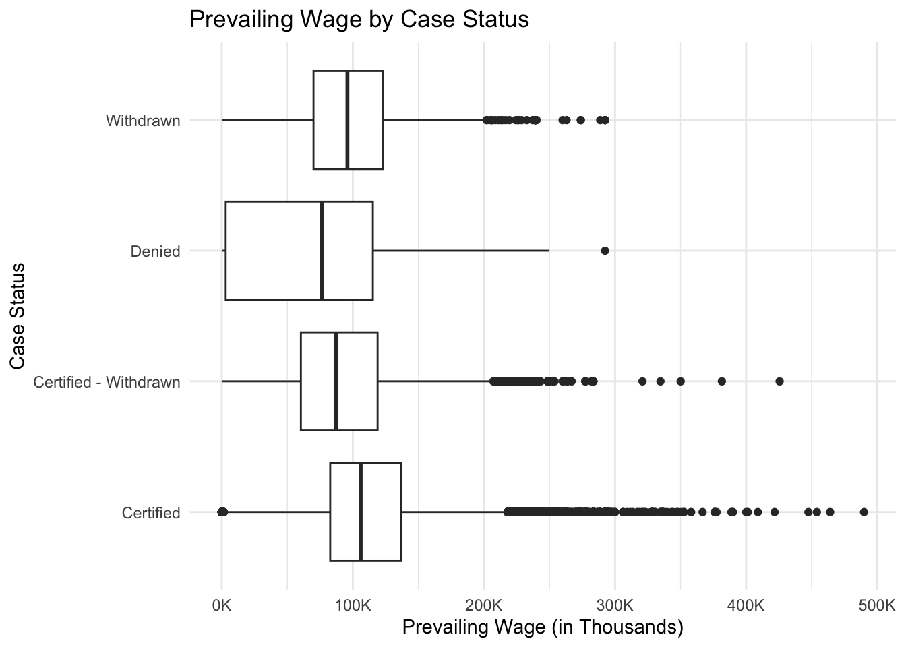
The boxplot of prevailing wage by case status indicates that the wage distribution is almost the same in general through the four categories of outcome. For every status the wages’ central mass is approximately the same range, and most of the median values are around the mid-five-figure to low-six-figure level. The distributions are very much right-skewed and have a long upper tail of high-wage outliers, which is most pronounced in the certified and certified-withdrawn cases where the prevailing wage levels are extremely high for some observations. Denied and withdrawn cases show slight dispersion but toward lower wages, very little distinction made by prevailing wage between certified and non-certified applications during this period as indicated by the great overlap in the boxes and whiskers.
We start our further analysis by identifying the top SOCs in-terms of highest frequency and higher median wages.
The below experiments are to identify the SOC groups with highest frequency of filings in 2024 Q4.
#Frequency of SOCs
soc_freq <- lca |>
filter(!is.na(SOC_TITLE), SOC_TITLE != "") |>
count(SOC_TITLE, sort = TRUE)
#SOC vs Freq
soc_freq|>
slice_max(n, n = 20) |>
ggplot(aes(x = reorder(SOC_TITLE, n), y = n)) +
geom_col() +
coord_flip() +
scale_y_continuous(labels = label_comma(scale = 1/1000, suffix = "K")) +
labs(
title = "Frequency of SOC in LCA Data",
x = "SOC",
y = "No of Applications (in Thousands)"
) +
theme_minimal()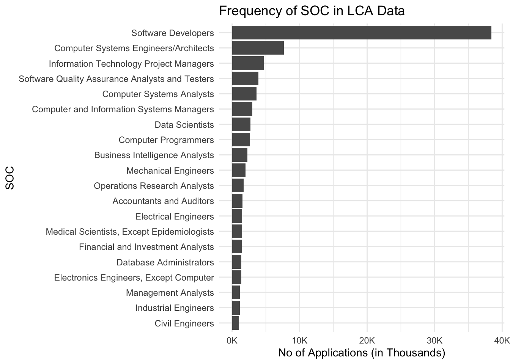
soc_table_top20 <- lca |>
count(SOC_CODE, SOC_TITLE, name = "n") |>
slice_max(n, n = 20, with_ties = FALSE) |>
arrange(desc(n))
soc_table_top20# A tibble: 20 × 3
SOC_CODE SOC_TITLE n
<chr> <chr> <int>
1 15-1252.00 Software Developers 38051
2 15-1299.08 Computer Systems Engineers/Architects 7629
3 15-1299.09 Information Technology Project Managers 4673
4 15-1253.00 Software Quality Assurance Analysts and Testers 3858
5 15-1211.00 Computer Systems Analysts 3251
6 11-3021.00 Computer and Information Systems Managers 2959
7 15-2051.00 Data Scientists 2715
8 15-1251.00 Computer Programmers 2650
9 15-2051.01 Business Intelligence Analysts 2205
10 17-2141.00 Mechanical Engineers 1977
11 15-2031.00 Operations Research Analysts 1641
12 13-2011.00 Accountants and Auditors 1546
13 19-1042.00 Medical Scientists, Except Epidemiologists 1470
14 17-2071.00 Electrical Engineers 1436
15 13-2051.00 Financial and Investment Analysts 1422
16 15-1242.00 Database Administrators 1355
17 17-2072.00 Electronics Engineers, Except Computer 1337
18 17-2112.00 Industrial Engineers 1125
19 13-1111.00 Management Analysts 1113
20 17-2051.00 Civil Engineers 985From the above analysis it is evident that Software Developers (15-1251, 15-1252) attributes to be the highest SOC group to be filed in 2024 Q4. The Frequency distribution clearly shows the skew towards filings for more IT/Software/Computer Science/Analytics related roles and the top 20 SOCs clearly depicts the most H1B filings for Tech roles.
The large disparity that we see between the Software Developer SOC and the rest can be explained by the broader range of job types/categories that it covers (eg: entry-level, associates, etc.), In contrast, the other SOC roles tend to be more niche and hierarchy, resulting in fewer openings/applicants.
Next we experimented by performing a wage analysis for different SOCs, to identify the top paying SOCs and in order to do this analysis we leverage box plot to analyze the mean wages. However, in our preliminary analysis we found inconsistencies in the wage format, since wages are reported in different units (year, month, week, hour). Therefore, we restricted our analysis to the hourly and yearly wages, which have the largest number of observations.
# Keep only rows with needed fields
lca_clean <- lca |>
filter(
!is.na(SOC_TITLE),
!is.na(WAGE_RATE_OF_PAY_FROM),
!is.na(PW_UNIT_OF_PAY)
)
# Top 20 SOC titles in this cleaned data
top_20_soc_titles <- lca_clean |>
count(SOC_TITLE, sort = TRUE) |>
slice_head(n = 20) |>
pull(SOC_TITLE)
lca_clean |>
filter(SOC_TITLE %in% top_20_soc_titles) |>
count(PW_UNIT_OF_PAY)# A tibble: 5 × 2
PW_UNIT_OF_PAY n
<chr> <int>
1 Bi-Weekly 9
2 Hour 3742
3 Month 36
4 Week 6
5 Year 80877Lets analyze the median distribution of wages for different SOCs.
# Keep only rows with needed fields
# Read data
lca_clean <- lca |>
filter(
!is.na(SOC_TITLE),
!is.na(WAGE_RATE_OF_PAY_FROM),
!is.na(PW_UNIT_OF_PAY)
)
# Top 20 SOC titles
top_20_soc_titles <- lca_clean |>
count(SOC_TITLE, sort = TRUE) |>
slice_head(n = 20) |>
pull(SOC_TITLE)
# Filter for top 20 with sufficient data
lca_top20 <- lca_clean |>
filter(SOC_TITLE %in% top_20_soc_titles) |>
group_by(SOC_TITLE, PW_UNIT_OF_PAY) |>
filter(n() >= 50) |>
ungroup()
# Identify and remove outliers using IQR method
lca_no_outliers <- lca_top20 |>
group_by(SOC_TITLE, PW_UNIT_OF_PAY) |>
mutate(
Q1 = quantile(WAGE_RATE_OF_PAY_FROM, 0.25),
Q3 = quantile(WAGE_RATE_OF_PAY_FROM, 0.75),
IQR = Q3 - Q1,
lower_bound = Q1 - 1.5 * IQR,
upper_bound = Q3 + 1.5 * IQR,
is_outlier = WAGE_RATE_OF_PAY_FROM < lower_bound | WAGE_RATE_OF_PAY_FROM > upper_bound
) |>
ungroup()
# Store outliers for later
outliers_data <- lca_no_outliers |>
filter(is_outlier) |>
select(SOC_TITLE, PW_UNIT_OF_PAY, WAGE_RATE_OF_PAY_FROM, EMPLOYER_NAME, CASE_NUMBER) |>
arrange(desc(WAGE_RATE_OF_PAY_FROM))
# Plot without outliers
lca_no_outliers |>
filter(!is_outlier) |>
ggplot(aes(
x = reorder(SOC_TITLE, WAGE_RATE_OF_PAY_FROM, FUN = median),
y = WAGE_RATE_OF_PAY_FROM
)) +
geom_boxplot() +
coord_flip() +
facet_wrap(~ PW_UNIT_OF_PAY, scales = "free_x") +
scale_y_continuous(labels = label_comma(scale = 1/1000, suffix = "K")) +
labs(
x = "SOC Title",
y = "Wage Rate of Pay (FROM) - Thousands",
title = "Wage Distribution by SOC (Top 20, Faceted by Pay Unit)",
subtitle = paste("Outliers removed:", format(nrow(outliers_data), big.mark = ","), "cases")
) +
theme(
text = element_text(size = 14),
axis.text = element_text(size = 12),
axis.title = element_text(size = 14, face = "bold"),
plot.title = element_text(size = 16, face = "bold"),
plot.subtitle = element_text(size = 13),
strip.text = element_text(size = 13, face = "bold")
)
The wage distribution plot indicates that, after removing extreme outliers, wages for the top 20 SOC titles are grouped closely together. Most of the annual salaries are within a similar mid-to-upper range, showing only slight differences between higher- and lower-paid jobs. However, within each SOC, the boxes and whiskers are relatively tall which means that there is significant variability within occupations and workers in the same job category can earn different amounts, even when using the same pay unit. Comparing hourly and yearly income shows that the overall ranking of jobs remains generally the same across pay units. However, the hourly panel has slightly less variation.
# Summary table of outliers
outliers_summary <- lca_no_outliers |>
filter(is_outlier) |>
group_by(SOC_TITLE, PW_UNIT_OF_PAY) |>
summarise(
n_outliers = n(),
min_outlier_wage = min(WAGE_RATE_OF_PAY_FROM),
max_outlier_wage = max(WAGE_RATE_OF_PAY_FROM),
upper_bound_threshold = first(upper_bound),
lower_bound_threshold = first(lower_bound),
.groups = "drop"
) |>
arrange(desc(max_outlier_wage))
print("Summary of removed outliers:")[1] "Summary of removed outliers:"outliers_summary |>
head(10)# A tibble: 10 × 7
SOC_TITLE PW_UNIT_OF_PAY n_outliers min_outlier_wage max_outlier_wage
<chr> <chr> <int> <dbl> <dbl>
1 Software Develop… Year 388 260040 140213006
2 Information Tech… Year 62 62.5 14369524
3 Computer Systems… Year 139 205731. 1515180
4 Medical Scientis… Year 143 130000 1228250
5 Financial and In… Year 30 38 1000000
6 Data Scientists Year 25 110 785690.
7 Computer and Inf… Year 50 320000 537152.
8 Management Analy… Year 21 268400 400000
9 Operations Resea… Year 25 270000 384000
10 Business Intelli… Year 26 234000 376000
# ℹ 2 more variables: upper_bound_threshold <dbl>, lower_bound_threshold <dbl># Step 1: Filter and count (select only needed columns first for memory efficiency)
soc_state <- lca |>
select(SOC_TITLE, WORKSITE_STATE) |>
filter(!is.na(SOC_TITLE), SOC_TITLE != "",
!is.na(WORKSITE_STATE), WORKSITE_STATE != "") |>
count(SOC_TITLE, WORKSITE_STATE, name = "n")
# Step 2: Get top 10 SOC titles
top_soc <- soc_state |>
group_by(SOC_TITLE) |>
summarise(total = sum(n), .groups = "drop") |>
slice_max(total, n = 10, with_ties = FALSE)
# Step 3: Get top 10 states (from top SOCs only)
top_states <- soc_state |>
semi_join(top_soc, by = "SOC_TITLE") |>
group_by(WORKSITE_STATE) |>
summarise(total = sum(n), .groups = "drop") |>
slice_max(total, n = 10, with_ties = FALSE)
# Step 4: Calculate proportions
soc_state_prop <- soc_state |>
semi_join(top_soc, by = "SOC_TITLE") |>
semi_join(top_states, by = "WORKSITE_STATE") |>
group_by(SOC_TITLE) |>
mutate(share = n / sum(n)) |>
ungroup()
# Step 5: Heatmap
ggplot(soc_state_prop,
aes(x = WORKSITE_STATE, y = SOC_TITLE, fill = share)) +
geom_tile(color = "white", linewidth = 0.5) + # Added borders for clarity
scale_fill_gradient(
low = "white",
high = "darkblue",
labels = percent_format(accuracy = 1)
) +
labs(
title = "Where Are Top SOC Titles Concentrated?",
x = "State",
y = "SOC Title",
fill = "Share of\nSOC in State"
) +
theme_minimal() +
theme(
axis.text.x = element_text(angle = 45, hjust = 1, size = 10),
axis.text.y = element_text(size = 9),
plot.title = element_text(face = "bold", size = 14)
)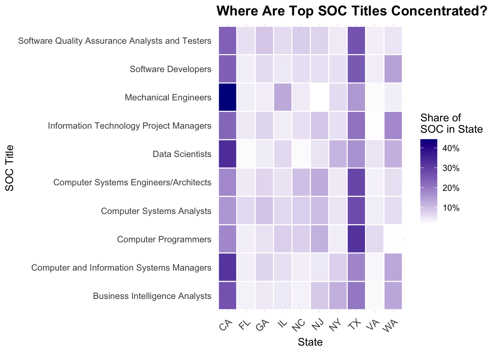
The heatmap represents the LCA distribution of the ten most common SOC titles in the ten states with the highest volume. Some patterns of concentrations are very clear. Software roles like Software Developers, Computer Systems Engineers/Architects, and Computer Programmers occupy predominantly large tech hubs, mainly California and Texas, followed by noticeably but smaller shares in other states like New York, Washington, and Virginia. Similarly, Data-related occupations like Data Scientists and Business Intelligence Analysts are mostly found in these coastal and highly tech states. On the other hand, some titles, like Mechanical Engineers and Information Technology Project Managers, are more dispersed and thus less concentrated hence the light but even shading. All in all, the figure shows that a small number of states contributes a lot to the H-1B LCAs in the technology occupations that are critical.
# 1. Filter only SOC = "Software Developers"
software_dev <- lca %>%
filter(SOC_TITLE == "Software Developers")
# 2. Get frequency of job titles within this SOC
job_freq <- software_dev %>%
filter(!is.na(JOB_TITLE), JOB_TITLE != "") %>%
count(JOB_TITLE, sort = TRUE)
# 3. Bar chart of top 20 job titles in Software Developers SOC
job_freq |>
slice_max(n, n = 20) |>
ggplot(aes(x = reorder(JOB_TITLE, n), y = n)) +
geom_col() +
coord_flip() +
scale_y_continuous(labels = label_comma(scale = 1/1000, suffix = "K")) +
labs(
title = "Top Job Titles within SOC: Software Developers",
x = "Job Title",
y = "No of Applications (in Thousands)"
) +
theme_minimal()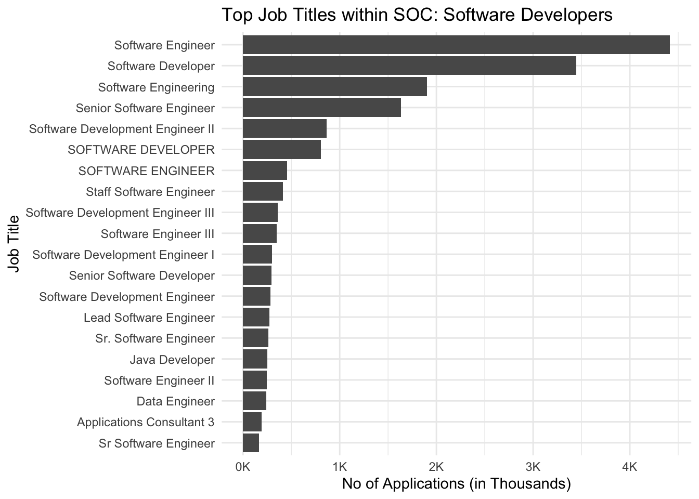
job_case <- software_dev |>
filter(!is.na(JOB_TITLE), JOB_TITLE != "",
!is.na(CASE_STATUS), CASE_STATUS != "") |>
count(JOB_TITLE, CASE_STATUS, name = "n")
# Focus on top 10 job titles overall
top10_jobs <- job_freq |>
slice_max(n, n = 10) |>
pull(JOB_TITLE)
job_case_top <- job_case |>
filter(JOB_TITLE %in% top10_jobs) |>
group_by(JOB_TITLE) |>
mutate(total_n = sum(n)) |> # total count for that job title
ungroup()
ggplot(job_case_top,
aes(x = reorder(JOB_TITLE, total_n), y = n, fill = CASE_STATUS)) +
geom_col() +
coord_flip() +
labs(
title = "Case Status Distribution\nTop 10 Job Titles (Software Developers)",
x = "Job Title",
y = "Count",
fill = "Case Status"
) +
scale_fill_manual(
values = c(
"Certified" = "#B4EEB4",
"Denied" = "red",
"Withdrawn" = "orange",
"Certified - Withdrawn" = "steelblue"
)
) +
theme_minimal()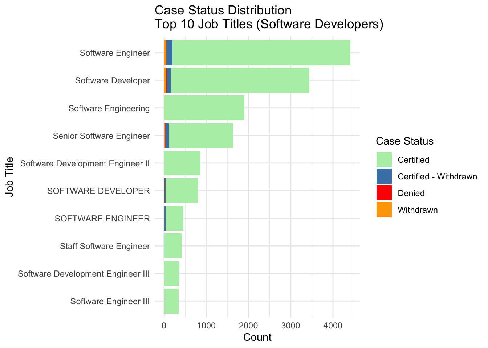
The distribution of case statuses within the top ten job titles under the “Software Developers” SOC shows that applications are overwhelmingly Certified across all titles. Roles such as Software Engineer, Software Developer, and Software Engineering account for the largest volumes, with only a very small share of cases appearing as Denied or Withdrawn. “Certified – Withdrawn” cases are present but remain a minor component relative to straightforward certifications. Overall, the figure indicates that for the most common software-developer job titles, H-1B LCA filings in this quarter are both highly concentrated in a small set of titles and have very high approval rates.
library(dplyr)
library(ggplot2)
library(maps)
# Filter for Software Developer SOC codes and calculate certification rate BY STATE
state_cert_rate <- lca |>
filter(!is.na(WORKSITE_STATE), WORKSITE_STATE != "") |>
filter(grepl("Software Developers", SOC_TITLE)) |> # Software Developer SOC codes
group_by(WORKSITE_STATE) |>
summarise(
total_cases = n(),
certified_cases = sum(CASE_STATUS == "Certified", na.rm = TRUE),
cert_rate = (certified_cases / total_cases) * 100,
.groups = "drop"
)
# Lookup table: 2-letter abbrev -> full state name (lowercase for map_data)
state_lookup <- data.frame(
WORKSITE_STATE = state.abb,
region = tolower(state.name),
stringsAsFactors = FALSE
)
# Join certification rates with state names and create bins
state_cert_map <- state_cert_rate |>
inner_join(state_lookup, by = "WORKSITE_STATE") |>
mutate(cert_bin = cut(cert_rate,
breaks = c(0, 70, 80, 85, 90, 95, 100),
labels = c("< 70%", "70-80%", "80-85%", "85-90%", "90-95%", "95-100%"),
include.lowest = TRUE))
# Get USA map data
usa_map <- map_data("state")
# Combine map with certification data
plot_data <- usa_map |>
left_join(state_cert_map, by = "region")
# Calculate state label positions
state_labels <- plot_data |>
group_by(region) |>
summarise(
long = mean(range(long)),
lat = mean(range(lat)),
.groups = "drop"
) |>
left_join(state_cert_map, by = "region")
# Choropleth Map with Discrete Binned Colors
ggplot() +
geom_polygon(
data = plot_data,
aes(x = long, y = lat, group = group, fill = cert_bin),
color = "black",
linewidth = 0.2
) +
geom_text(
data = state_labels |> filter(!is.na(WORKSITE_STATE)),
aes(x = long, y = lat, label = WORKSITE_STATE),
color = "black",
size = 2.5,
fontface = "bold"
) +
coord_fixed(1.3) +
scale_fill_brewer(
palette = "RdYlGn",
na.value = "grey90",
direction = 1
) +
labs(
title = "LCA Certification Rate by State - Software Developers",
subtitle = "Percentage of applications certified within each state",
fill = "Certification\nRate",
x = NULL,
y = NULL
) +
theme_minimal() +
theme(
axis.text = element_blank(),
axis.ticks = element_blank(),
panel.grid = element_blank(),
plot.title = element_text(face = "bold", size = 14),
plot.subtitle = element_text(size = 11, color = "grey40"),
legend.position = "right"
)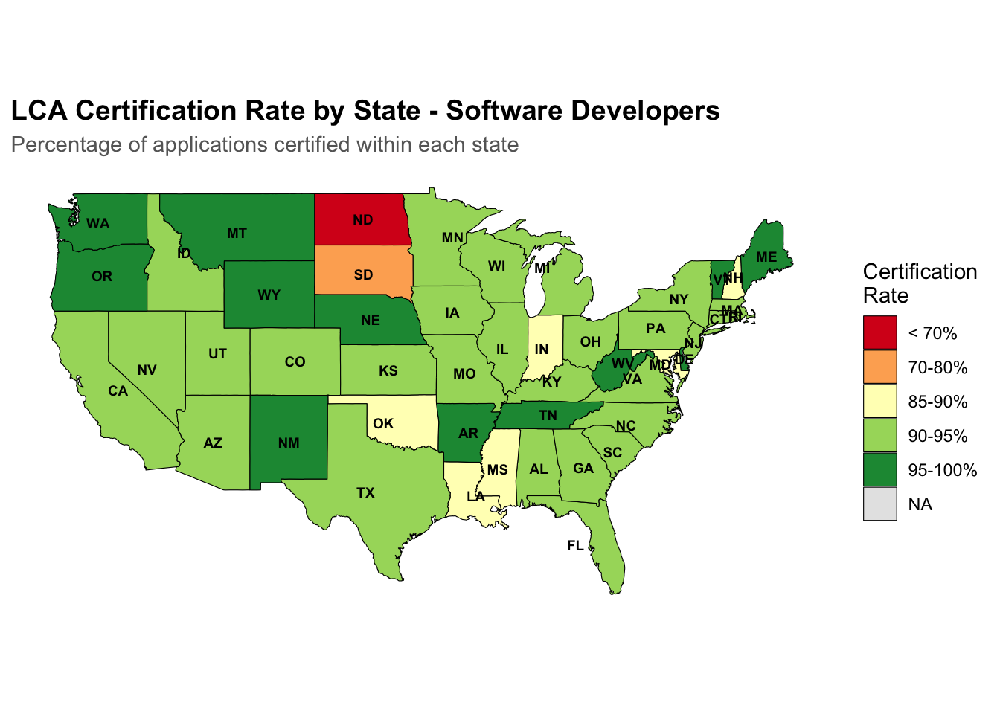
The map shows that most states have very high certification rates for Software Developer LCAs (generally above 90%), especially major tech states like CA, WA, TX, and NY. A small number of states fall into lower bands (below about 85–90%), indicating that denials are relatively uncommon for this occupation in most of the country. Only South Dakota (about 70–80%) and North Dakota (below 70%) stand out with noticeably lower certification rates.
state_wage <- lca |>
filter(
CASE_STATUS == "Certified",
SOC_TITLE == "Software Developers",
!is.na(WORKSITE_STATE),
WORKSITE_STATE != "",
!is.na(PREVAILING_WAGE),
PREVAILING_WAGE > 0
) |>
group_by(WORKSITE_STATE) |>
summarise(
median_wage = median(PREVAILING_WAGE),
.groups = "drop"
)
state_wage_map <- state_wage |>
inner_join(state_lookup, by = "WORKSITE_STATE")
usa_map <- map_data("state")
plot_wage_data <- usa_map |>
left_join(state_wage_map, by = "region")
mid_val <- median(plot_wage_data$median_wage, na.rm = TRUE)
ggplot() +
geom_polygon(
data = plot_wage_data,
aes(x = long, y = lat, group = group, fill = median_wage),
color = "white",
linewidth = 0.2
) +
geom_text(
data = state_labels,
aes(x = long, y = lat, label = WORKSITE_STATE),
color = "white",
size = 2
) +
coord_fixed(1.3) +
labs(
title = "Median Prevailing Wage by State (Certified LCAs)",
fill = "Median Wage",
x = NULL,
y = NULL
) +
scale_fill_gradient(
low = "#c6e5ff",
high = "#003366",
trans = "sqrt"
) +
theme_minimal() +
theme(
axis.text = element_blank(),
axis.ticks = element_blank()
)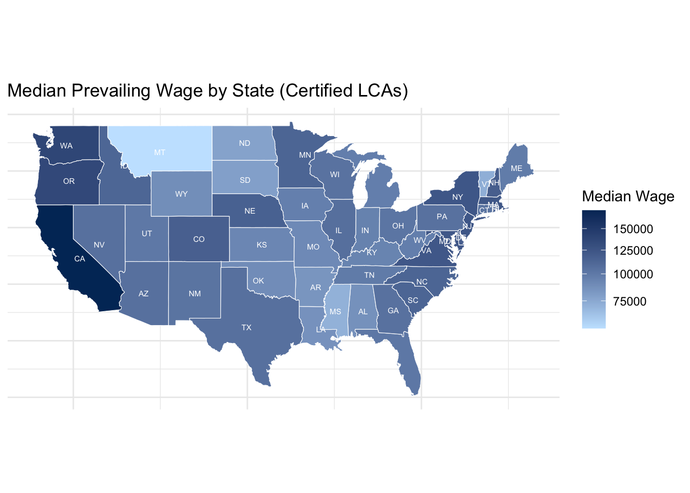
The map of median prevailing wage for certified LCAs presents a distinct pattern of distribution across the country. The top-ranked median salaries are found in the coastal and states with technology as the main industry like California, Washington, and New York where the median values are above $150,000. Other states with very high median wages are Massachusetts and a few western states with big cities that have a large labor market. On the other hand, the southern and to some extent, the midwestern states have noticeably lower median prevailing wages, mostly between $70,000 and $100,000. This distribution not only mirrors differences in local cost of living and industrial composition but also, in high-cost, tech-heavy areas, H-1B workers are paid higher than in states where a larger share of the workforce is in lower-paying occupations.
library(dplyr)
library(ggplot2)
library(ggalluvial)
# Filter for Software Developers
software_dev <- lca |>
filter(SOC_TITLE == "Software Developers")
# Get top 10 job titles
top_job_titles <- software_dev |>
filter(!is.na(JOB_TITLE), JOB_TITLE != "") |>
count(JOB_TITLE, sort = TRUE) |>
slice_head(n = 10) |>
pull(JOB_TITLE)
# Create the flow data with top job titles only
software_dev_flow <- software_dev |>
filter(
JOB_TITLE %in% top_job_titles,
!is.na(PW_WAGE_LEVEL), PW_WAGE_LEVEL != "",
!is.na(CASE_STATUS), CASE_STATUS != "",
CASE_STATUS %in% c("Denied", "Withdrawn", "Certified - Withdrawn")
) |>
count(JOB_TITLE, PW_WAGE_LEVEL, CASE_STATUS, name = "n") |>
filter(n > 20) # Lower threshold since we're already filtering to top titles
# Create alluvial diagram
ggplot(software_dev_flow,
aes(axis1 = JOB_TITLE,
axis2 = PW_WAGE_LEVEL,
axis3 = CASE_STATUS,
y = n)) +
geom_alluvium(aes(fill = PW_WAGE_LEVEL), alpha = 0.7) +
geom_stratum() +
geom_text(stat = "stratum",
aes(label = after_stat(stratum)), size = 2.5) +
scale_x_discrete(limits = c("Job Title", "PW Wage Level", "Case Status")) +
scale_fill_brewer(palette = "Set2") +
labs(
title = "Flow from Top Software Developer Job Titles to Wage Level to Case Status",
subtitle = "Top 10 most common job titles for Software Developers",
y = "Number of Cases",
fill = "Wage Level"
) +
theme_minimal() +
theme(
plot.title = element_text(face = "bold", size = 14),
plot.subtitle = element_text(size = 11, color = "grey40"),
axis.text.x = element_text(size = 10, face = "bold")
)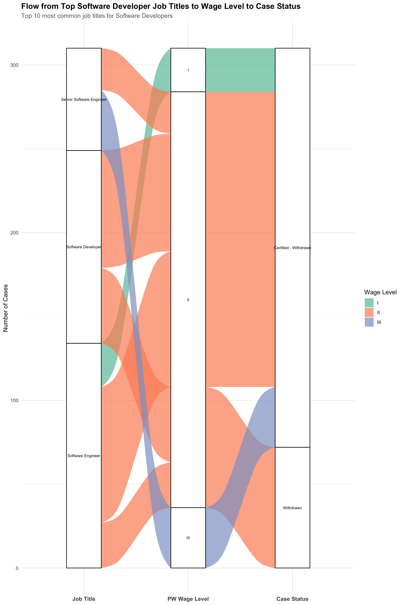
The alluvial diagram shows how non-certified cases for the top Software Developer job titles flow through wage levels to final outcomes. Most of these cases are filed at prevailing wage level II, with smaller shares at levels I and III; level III is more common for senior titles such as Senior Software Engineer. Across wage levels, the predominant outcome is “Certified – Withdrawn”, while outright denials and withdrawals are relatively rare, indicating that most problematic cases for these titles are not rejected by the agency but instead withdrawn after certification or during processing.
library(dplyr)
library(rpart)
library(rpart.plot)
# Prepare data
lca_simple <- lca |>
filter(!is.na(CASE_STATUS)) |>
mutate(
certified = factor(ifelse(CASE_STATUS == "Certified", "Yes", "No")),
wage_level = factor(coalesce(PW_WAGE_LEVEL, "Unknown")),
soc_major = factor(substr(SOC_CODE, 1, 2)),
state_group = case_when(
WORKSITE_STATE %in% c("CA", "TX", "NY", "WA", "NJ") ~ WORKSITE_STATE,
TRUE ~ "Other"
),
state_group = factor(state_group),
full_time = factor(ifelse(FULL_TIME_POSITION == "Y", "Yes", "No"))
) |>
select(certified, wage_level, soc_major, state_group, full_time) |>
na.omit()
# Sample data
set.seed(123)
if(nrow(lca_simple) > 20000) {
lca_simple <- lca_simple |> slice_sample(n = 20000)
}
# Split data
train_idx <- sample(1:nrow(lca_simple), 0.7 * nrow(lca_simple))
train <- lca_simple[train_idx, ]
test <- lca_simple[-train_idx, ]
# Check class balance
cat("Training set class distribution:\n")Training set class distribution:print(table(train$certified))
No Yes
1259 12741 print(prop.table(table(train$certified)))
No Yes
0.08992857 0.91007143 # Calculate class weights to handle imbalance
n_yes <- sum(train$certified == "Yes")
n_no <- sum(train$certified == "No")
total <- nrow(train)
# Create loss matrix to penalize misclassifying minority class more
loss_matrix <- matrix(c(0, n_yes/n_no, 1, 0), nrow = 2, byrow = TRUE)
rownames(loss_matrix) <- c("No", "Yes")
colnames(loss_matrix) <- c("No", "Yes")
# Train Decision Tree with loss matrix
tree_model <- rpart(
certified ~ .,
data = train,
method = "class",
parms = list(loss = loss_matrix),
control = rpart.control(
maxdepth = 5,
minsplit = 30, # Lower to allow more splits
minbucket = 10, # Lower minimum leaf size
cp = 0.0001 # Much lower complexity parameter
)
)
# Visualize tree
rpart.plot(tree_model, under = TRUE)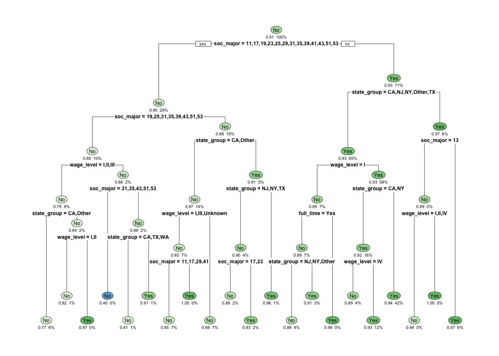
The decision tree models the probability that an LCA is certified using only a few discrete predictors: SOC major group, grouped worksite state, prevailing wage level, and full-time status. The root node already reflects the strong imbalance in the data, with roughly 90% of cases certified overall, so most terminal nodes also have high certification probabilities. The first splits show that certification is especially likely for certain SOC clusters filed in CA, NY, NJ, TX or WA and at standard wage levels (I or IV), where the predicted certification rate is typically above 90–95%. Lower certification probabilities appear only in small subgroups—mainly some non-tech SOC groups in “Other” states or records with non-standard/unknown wage levels—indicating that, conditional on these features, denial remains relatively rare.
# Model accuracy
predictions <- predict(tree_model, test, type = "class")
accuracy <- mean(predictions == test$certified)
cat("Accuracy:", round(accuracy, 4), "\n")Accuracy: 0.6585 # Confusion Matrix
conf_matrix <- table(Predicted = predictions, Actual = test$certified)
print(conf_matrix) Actual
Predicted No Yes
No 254 1755
Yes 294 3697# Feature Importance (from rpart)
importance <- tree_model$variable.importance
if(length(importance) > 0) {
importance_df <- data.frame(
Feature = names(importance),
Importance = importance
) |>
arrange(desc(Importance))
library(ggplot2)
ggplot(importance_df, aes(x = reorder(Feature, Importance), y = Importance)) +
geom_col(fill = "steelblue", alpha = 0.8) +
coord_flip() +
labs(
title = "Feature Importance from Decision Tree",
x = "Feature",
y = "Importance Score"
) +
theme_minimal()
} else {
cat("No variable importance available - tree may not have splits\n")
}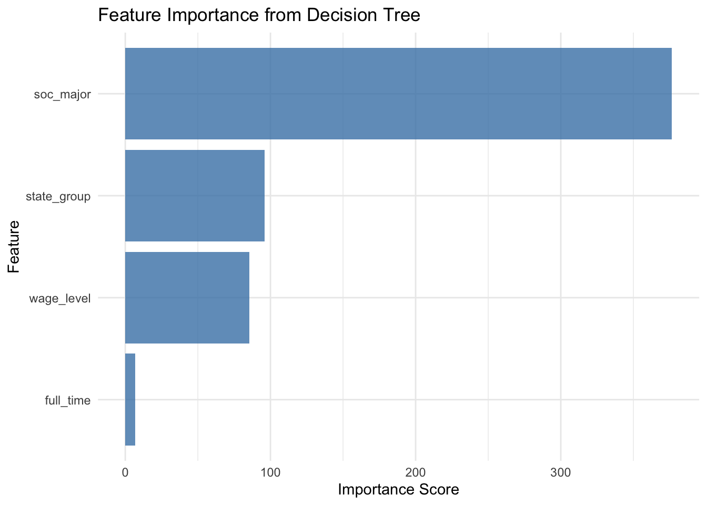
The plot shows feature-importance of predictors used by the decision tree. It is evident that the SOC major group (soc_major) is the most influential predictor of whether an LCA is certified. Next is the worksite location (state_group), followed by the prevailing wage level (wage_level). The full-time indicator (full_time) has very low importance. This suggests that, in this model, the type of occupation and its location matter much more for certification outcomes than whether the position is classified as full-time.